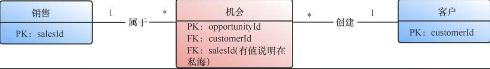
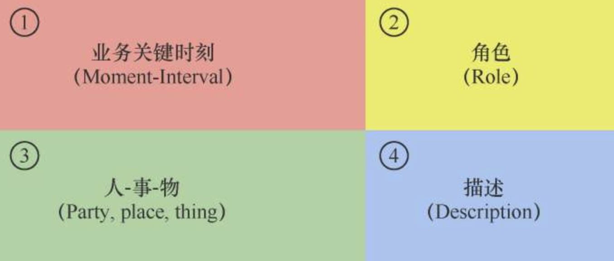

Intro
写好代码的技艺不是一蹴而就的，它是一个系统化的工程，不是看几本书、写几年代码就能轻松习得的，而需要我们对自己的思维习惯、学习方法和工程实践进行彻底的反省和重构。本书记录了一个普通码农如何通过认知升级、知识重构、持续学习，继而转向工匠的过程。
本书共分为三大部分：技艺部分、思想部分和实践部分。
- 技艺部分（第1~7章）
- 思想部分（第8~11章）
- 实践部分（第12~13章）
1 命名
名为万物之始，万物始于无名，道生一，一生二，二生三，三生万物。
——《易经》
1.1 介绍
1.1.1 命名的力量
- 阿里巴巴初创时期，马云为公司的命名，全球化，众人皆知，“a”在英文里第一位，令人感到奇怪从而留下印象。
- 2000年左右，给普通Java对象命名POJO（Plain Old Java Object），使人们更愿意使用，因此Spring等一系列轻量级框架的诞生，很快终结了EJB（Enterprise Java Bean）的统治地位。
1.1.2 命名的困难和作用
代码即文档，可读性好的代码应该有一定的自明性，也就是不借助注释和文档，代码本身就能显性化地表达开发者的意图。这种自明性在很大程度上依赖于我们对问题域的理解，以及命名是否合理。
命名的过程本身是一个抽象和思考的过程。
在工作中，当我们不能给一个模块、一个对象、一个函数，甚至一个变量找到合适的名称的时候，往往说明我们对问题的理解还不够透彻，需要重新去挖掘问题的本质，对问题域进行重新分析和抽象，有时还要调整设计和重构代码。
如果你无法想出一个合适的名字，很可能意味着代码“坏味道”、设计有问题。这时可以思考一下：是不是一个方法里实现了太多的功能？或者类的封装内聚性不够？又或者是你对问题的理解还不够透彻，需要获取更多的信息？
1.2 规则
1.2.1 变量名
Specification
- 变量名应该是名词，能够正确地描述业务，有表达力。
- 如果一个变量名需要注释来补充说明，那么很可能说明命名就有问题。
Example
Example 1
【反】
int d; // 表示过去的天数我们只能从注释中知道变量d指的是什么。如果没有注释，阅读代码的人为了知道d的含义，就不得不去寻找它的实例以获取线索。
【正】
int elapsedTimeInDays;Example 2
【反】
魔术数：
- 一天秒数86400
- 每页显示10行记录
【正】
定义常量：
SECONDS_PER_DAY = 86400
PAGE_SIZE = 10这样做还有一个好处，即代码的可搜索性：在代码中查找PAGE_SIZE很容易，但是想找到10就很麻烦了，它可能是某些注释或者常量定义的一部分，出现在不同作用的各种表达式中。
1.2.2 函数名
Specification
函数命名要具体，空泛的命名没有意义。
函数的命名要体现做什么，而不是怎么做。
Example
Example 1
【反】
processData()：所有的方法都是对数据的处理，这样的命名并没有表明要做的事情。
【正】
validateUserCredentials()或者eliminateDuplicateRequests()
Example 2
假如我们将雇员信息存储在一个栈中，现在要从栈中获取最近存储的一个雇员信息。
【反】
popRecord()：栈数据结构是底层实现细节，命名应该提升抽象层次、体现业务语义。
【正】
getLatestEmployee()：合理的命名可以使你省掉记住“出栈”的脑力步骤，你只需要简单地说“取最近雇员的信息”。
1.2.3 类名
Specification
类（Class）是面向对象中最重要的概念之一，是一组数据和操作的封装。对于一个应用系统，我们可以将类分为两大类：实体类和辅助类。
- 实体类承载了核心业务数据和核心业务逻辑，其命名要充分体现业务语义，并在团队内达成共识。
- 辅助类是辅佐实体类一起完成业务逻辑的，其命名要能够通过后缀来体现功能。
Example
Example 1
- 用来为Customer做控制路由的控制类CustomerController。
- 提供Customer服务的服务类CustomerService。
- 获取数据存储的仓储类CustomerRepository。
Example 2
【反】
CSVHelper.parse(String)
CSVHelper.create(int[])【正】
对于辅助类，尽量不要用Helper、Util之类的后缀，因为其含义太过笼统，容易破坏SRP（单一职责原则），更推荐以下写法：
CSVParser.parse(String)
CSVBuilder.create(int[])1.2.4 包名
Specification
包（Package）代表了一组有关系的类的集合，起到分类组合和命名空间的作用。
- 包名应该能够反映一组类在更高抽象层次上的联系。
- 包的命名要适中，不能太抽象，也不能太具体。
Example
有一组类Apple、Pear、Orange，我们可以将它们放在一个包中，命名为fruit。
如果包名过于具体，比如Apple，那么Pear和Orange放进该包中就不恰当了；如果报名太抽象，称为Object，而Object无所不包，这就失去了包用来限定范围的作用。
1.2.5 模块名
Specification
这里说的模块（Module）主要是指Maven中的Module，相对于包来说，模块的粒度更大，通常一个模块中包含了多个包。在Maven中，模块名就是一个坐标: <groupId,artifactId>。
- 名称保证模块在Maven仓库中的唯一性。
- 名称要反映模块在系统中的职责。
Example
在COLA架构中，模块代表着架构层次，因此，对任何应该遵循COLA规范的应用都有着xxx-controller、xxx-app、xxx-domain和xxx-Infrastructure这4个标准模块。
1.3 方法论
1.3.1 保持一致性
保持命名的一致性，可以提高代码的可读性，从而简化复杂度。我们要小心选择命名，一旦选中，就要持续遵循，保证名称始终一致。
每个概念对应一个词
Methodology
在项目中，作者通常按照表1-1所示的约定，保持命名的一致性。
Example
Example 1
fetch、retrieve、get、find和query都可以表示查询的意思，如果不加约定地给多个类中的同种查询方法命名，你怎么记得是哪个类中的哪个方法呢？
Example 2
在一段代码中，同时存在manager、controller和handler，会令人感到困惑。
使用对仗词
Methodology
下面列出一些常见的对仗词组：
- add/remove
- increment/decrement
- open/close
- begin/end
- insert/delete
- show/hide
- create/destroy
- lock/unlock
- source/target
- first/last
- min/max
- start/stop
- get/set
- next/previous
- up/down
- old/new
Example
像first/last这样的对仗词就很容易理解；而像fileOpen()和fClose()这样的组合则不对称，容易使人迷惑。
后置限定词
Methodology
很多程序中会有表示计算结果的变量，例如总额、平均值、最大值等。如果你要用类似Total、Sum、Average、Max、Min这样的限定词来修改某个命名，那么记住把限定词加到名字的最后，并在项目中贯彻执行，保持命名风格的一致性。
Example
revenueTotal（总收入）、expenseTotal（总支出）、revenueAverage（平均收入）和expenseAverage（平均支出）。
统一业务语言
Methodology
统一语言就是要确保团队在内部的所有交流、模型、代码和文档中都要使用同一种编程语言。
Example
如果你每天与业务方讨论的是一种编程语言，而在团队内部交流、设计画图时使用另一种语言，编写的代码中体现出来的又是毫无章法、随意翻译的内容，这无疑会降低代码的表达能力，在业务语义和文档、代码之间出现了一条无形的鸿沟。
统一技术语言
Methodology
有些技术语言是通用的，业内人士都能理解，我们应该尽量使用这些术语来进行命名。
Example
DO、DAO、DTO、ServiceI、ServiceImpl、Component和Repository等。
1.3.2 自明的代码
“好的代码是最好的文档”。也就是说，代码若要具备文档的功能，前提必须是其本身要具备很好的可读性和自明性。所谓自明性，就是在不借助其他辅助手段的情况下，代码本身就能向读者清晰地传达自身的含义。
中间变量
Methodology
使用中间变量，即将计算过程打散成多个步骤，并用有意义的变量名来命名中间变量，从而把隐藏的计算过程以显性化的方式表达出来。
Example
我们要通过Regex来获得字符串中的值，并放到map中：
Matcher matcher = headerPattern.matcher(line);
if(matcher.find()){
headers.put(matcher.group(1), matcher.group(2));
}用中间变量，可以写成如下形式：
Matcher matcher = headerPattern.matcher(line);
if(matcher.find()){
String key = matcher.group(1);
String value = matcher.group(2);
headers.put(key, value);
}设计模式语言
Methodology
在技术人员之间共享和使用设计模式语言，可以极大地提升沟通的效率。当然，前提是大家都要理解和熟悉这些模式，否则就会变成“鸡同鸭讲”。
因此，我们有必要在命名上就将设计模式显性化出来，这样阅读代码的人能很快领会到设计者的意图。
Example
Example 1
Spring里面的ApplicationListener，通过这个命名，我们知道它使用了观察者模式，每一个被注册的ApplicationListener在Application状态发生变化时，都会接收到一个notify。这样我们就可以在容器初始化完成之后进行一些业务操作，比如数据加载、初始化缓存等。
Example 2
在进行EDM（邮件营销）时要根据一些规则过滤掉一些客户，比如没有邮箱地址的客户、没有订阅关系不能发送邮件的客户、3天内不能重复发送邮件的客户等。这是是一个典型的pipeline处理方式，责任链在处理该问题上是一个很好的选项，FilterChain这个名字非常恰当地表达出了作者的意图，Chain表示用的是责任链模式，Filter表示用来进行过滤。
小心注释
如果注释是为了阐述代码背后的意图，那么这个注释是有用的；
如果注释是为了复述代码功能，这样的注释往往意味着“坏味道”，是为了弥补我们代码表达能力的不足。
Methodology
不要复述功能。要考虑为了复述代码功能而存在的注释是否是必需的。如果编程语言足够有表达力，或者我们擅长用代码显性化地表达意图，那么也许根本就不需要注释。
要解释背后意图注释要能够解释代码背后的意图，而不是对功能的简单重复。
Example
Example 1
在JDK的源码java.util.logging.Handler中，我们可以看到如下代码，如果没有注释，那么可能没人知道“newFormatter.getClass();”是为了判空，注释“Check for a null pointer”就是为了弥补代码表达能力的失败而存在的。
public synchronized void setFormatter(Formatter newFormatter) {
checkPermission();
// Check for a null pointer:
newFormatter.getClass();
formatter = newFormatter;
}如果我们换一种写法，使用java.util.Objects.requireNonNull进行判空，那么注释就完全是多余的，代码本身足以表达其意图。
Example 2
我们在一个系统中看到如下代码，这里的注释和没写是一样的，因为它只是对sleep的简单复述。
try {
//在这里等待2秒
Thread.sleep(2000);
} catch (InterruptedException e) {
LOGGER.error(e);
}正确的做法应该是阐述sleep背后的原因，比如改写成“休息2秒，为了等待关联系统处理结果”。
或者直接用一个private方法将其封装起来，用显性化的方法名来表达意图，这样就不需要注释了。
private void waitProcessResultFromA( ){
try {
Thread.sleep(2000);
} catch (InterruptedException e) {
LOGGER.error(e);
}
}1.3.3 命名工具
Methodology
当你不知道如何优雅地给变量命名时，可以使用命名工具，快速搜索大型项目中的变量命名，看其他大型项目源码是如何命名的，哪些变量名的使用频率高。
Example
我们可以在IDE中安装一个搜索插件，便于搜索海量的互联网上的开源代码。作者一般会安装一个叫作OnlineSearch的插件，插件里自带了像SearchCode这样的代码搜索工具。也可以自己配置像Codelf这样的代码搜索工具。
2 规范
离娄之明，公输子之巧，不以规矩，不能成方圆。
——孟子《离娄上》
2.1 介绍
事物的复杂程度在很大程度上取决于其有序程度，减少无序能在一定程度上降低复杂度，这正是规范的价值所在。
认知，是指人们获得知识或应用知识的过程。认知是有成本的，而混乱的代价在于让我们对事物无法形成有效的记忆和认知，导致我们每次面对的问题都是新问题，每次面临的场景都是新场景，又要重新理解一遍。
- 杂乱无章不收拾的衣柜中寻找自己想要穿的衣服。
- 工作中面对混乱的系统估一个需求每次都需要很久才找到需要改动的代码位置。
因此，我们有必要使用规范和约定来使大脑从记忆不同的代码段的随意性、偶然性差异中解脱出来。
2.2 代码规范
2.2.1 代码格式
代码格式关系到代码的可读性，因此需要遵从一定的规范，包括缩进、水平对齐、注释格式等。
代码格式的规范不是绝对的，可能会因为语言和个人偏好而不同，没有一种比另一种更好的说法。它其实是一种约定，一旦约定下来，固化成IDEA/Eclipse IDE代码的统一模板，让每个开发人员安装即可，大家遵循约定就好了。一个团队最好是选定一种格式，因为一致性可以减少复杂度。
2.2.2 空行规范
一个简单的原则就是将概念相关的代码放在一起，相关性越强，彼此之间的距离应该越短。
不同作用的代码，相关性差的代码一定记得空行，以增加区分度，形成段落。
2.2.3 命名规范
类名
采用“大驼峰”形式，即首字母大写的驼峰。例如Object、StringBuffer、FileInputStream。
方法名
采用“小驼峰”形式，即首字母小写的驼峰，方法名一般为动词，与参数组成动宾结构。
例如Thread的sleep(long millis)、StringBuffer的append(String str)。
常量
命名的字母全部大写，单词之间用下划线连接。
例如TOTAL_COUNT、PAGE_SIZE等。
枚举类
以Enum或Type结尾，枚举类成员名称需要全大写，单词间用下划线连接。
例如SexEnum.MALE、SexEnum.FEMALE。
抽象类名
使用Abstract开头；异常类使用Exception结尾；实现类以impl结尾；测试类以它要测试的类名开始，以Test结尾。
包名
统一使用小写，点分隔符之间有且仅有一个自然语义的英语单词，包名统一使用单数形式。通常以com或org开头，加上公司名，再加上组件或者功能模块名。
例如org.springframework.beans。
2.2.4 日志规范
开发人员应在一开始就养成良好的撰写日志的习惯，并在实际的开发工作中为写日志预留足够的时间。写好程序的日志可以帮助我们大大减轻后期维护的压力。
在打印日志时，要特别注意日志输出级别，这是系统运维的需要。详细的日志输出级别分为OFF、FATAL、ERROR、WARN、INFO、DEBUG、ALL或者自定义的级别。比较有用的4个级别依次是ERROR、WARN、INFO和DEBUG。
ERROR级别
ERROR表示不能自己恢复的错误，需要立即被关注和解决。
例如，数据库操作错误、I/O错误（网络调用超时、文件读取错误等）、未知的系统错误（NullPointerException、OutOfMemoryError等）。
- 打印线程堆栈和一定上下文：对于ERROR，我们不仅要打印线程堆栈，最好打印出一定的上下文（链路TraceId、用户Id、订单Id、外部传来的关键数据），以便于排查问题。
- 要接入监控和报警系统：ERROR需要人工介入处理，及时止损，否则会影响系统的可用性。
- 不能滥用ERROR：防止”狼来了“的情况，一定要做好ERROR输出的场景定义和规范，再配合监控治理，双管齐下，确保线上系统的稳定。
WARN级别
WARN表明会出现潜在错误，虽然不是直接的错误信息，但是也要给程序员的一些提示。
可预知的业务问题最好采用WARN输出：可预知的业务问题最好不要用ERROR输出日志，以免污染报警系统。例如，参数校验不通过、没有访问权限等业务异常。
配置适当阈值的报警：在短时间内产生过多的WARN日志，也是一种系统不健康的表现。因此有必要为WARN配置一个适当阈值的报警，比如访问受限WARN超过100次/分，则发出报警。这样在WARN日志过于频繁时，我们能及时收到系统报警，去跟进用户问题。例如，如果是产品设计上有缺陷导致用户频繁出现操作卡点，可以考虑做一下流程或者产品上的优化。
INFO级别
INFO用于记录系统的基本运行过程和运行状态。
- 优先根据INFO日志初步定位系统变化：通常来说，优先根据INFO日志可初步定位，主要包括系统状态变化日志、业务流程的核心处理、关键动作和业务流程的状态变化。
- 切忌把INFO当成DEBUG使用：适当的INFO可以协助我们排查问题，但是切忌把INFO当成DEBUG使用，这样会导致记录的数据过多，一方面影响系统性能，日志文件增长过快，消耗不必要的存储资源；另一方面也不利于阅读日志文件。
DEBUG级别
DEBUG是输出调试信息，如request/response的对象内容。
- 覆盖Object的toString方法：在输出对象内容时，要覆盖Object的toString方法，否则输出的是对象的内存地址，就起不到调试的作用了。
- 开发和预发环境下打开DEBUG日志：通常在开发和预发环境下，DEBUG日志会打开，以方便开发和调试。
- 线上环境通常关闭DEBUG日志：而在线上环境，DEBUG开关需要关闭，因为在生产环境下开启DEBUG会导致日志量非常大，其损耗是难以接受的。只有当线上出现bug或者棘手的问题时，才可以动态地开启DEBUG。
- 分布式配置工具过滤日志：为了防止日志量过大，我们可以采用分布式配置工具来实现基于requestId判断的日志过滤，从而只打印我们所需请求的DEBUG日志。
2.2.5 异常规范
异常处理
很多的应用系统因为没有统一的异常处理规范，增加了人为的复杂性：
- 代码中到处充斥着异常捕获的try/catch的代码，搞乱了代码结构，把错误处理与正常流程混为一谈，严重影响了代码的可读性。
- 异常处理不统一，有的场景对外直接抛出异常，有的场景对外返回错误码，这种不一致性让服务的调用方摸不着头脑，增加了服务的使用成本和沟通成本。
建议在业务系统中设定两个异常，分别是BizException（业务异常）和SysException（系统异常），而且这两个异常都应该是Unchecked Exception。
为什么不建议用Checked Exception呢？因为它破坏了开闭原则。如果你在一个方法中抛出了Checked Exception，而catch语句在3个层级之上，那么你就要在catch语句和抛出异常处理之间的每个方法签名中声明该异常。这意味着在软件中修改较低层级时，都将波及较高层级，修改好的模块必须重新构建、发布，即便它们自身所关注的任何东西都没有被改动过。
针对业务异常和系统异常要做统一的异常处理，类似于AOP，在应用处理请求的切面上进行异常处理收敛，其处理流程如下：
try {
//业务处理
Response res = process(request);
}
catch (BizException e) {
//业务异常使用WARN级别
logger.warn("BizException with error code:{},error message:{}", e.getErrorCode(), e.getErrorMsg());
}
catch (SysException ex) {
//系统异常使用ERROR级别
log.error("System error" + ex.getMessage(), ex);
}
catch (Exception ex) {
//兜底
log.error("System error" + ex.getMessage(), ex);
} 千万不要在业务处理内部到处使用try/catch打印错误日志，这样会使功能代码和业务代码缠绕在一起，让代码显得很凌乱，并且影响代码的可读性。
错误码
错误码规范并没有统一的约定，错误码管理混乱会给后续的系统维护（特别是在理清系统业务脉络和问题定位上）带来很多麻烦。
错误码非常重要，一定要在系统搭建之初就制定好相应的规范，否则当系统上线后，系统的错误码已经对前端或者外部系统进行了透出，再重构的可能性就很小了。
不同的软件可以有不同的错误码规范策略，这里总结了以下两种方式。
- 编号错误码
对于平台、底层系统或软件产品，可以采用编号式的编码规范。
- 好处：编码风格固定，给人一种正式感；
- 缺点：必须要配合文档才能理解错误码代表的意思。
例如，数据库软件Oracle中总共有2000多个异常，其编码规则是ORA-00001~ORA-02149，每一个错误码都有对应的错误解释：
- ORA-00001：违反唯一约束条件。
- ORA-00017：请求会话以设置跟踪事件。
- ORA-00018：超出最大会话数。
淘宝开放平台也采用类似的编码方式：
- 0~100：表示平台解析错误
- 4：表示User call limited（ISV调用次数超限）
另外要注意，对不同的错误波段，一定要预留足够的码号。例如，淘宝开放平台所用的3位数就显得有些拘谨，其支撑的错误数最多不能超过100，超过100后，为了向后兼容，只能通过子错误码的方式进行变通处理。
- 显性化错误码
大型分布式架构下的业务系统中，每个业务都由很多分布式服务组成，而且这些服务都提供给内部系统使用。在这种情况下，除了编号错误码之外，更推荐使用显性化的错误码。
显性化的错误码具有更强的灵活性，适合敏捷开发。
例如，我们可以将错误码定义成3个部分：类型+场景+自定义标识。每个部分之间用下划线连接，内容以大驼峰的方式书写。这里可以打破Java的常量命名规范，驼峰方式会更方便阅读。
对于错误类型，我们可以做一个约定：
- P：代表参数异常（ParamException）
- B：代表业务异常（BizException）
- S：代表系统异常（SystemException）。
2.3 埋点规范
“业务数据化、数据业务化”，即业务要沉淀数据、数据要反哺业务。对于产品经理来说，要清楚用户的第一件事情是做什么、接着还会做什么、用户的轨迹和动线是怎样的。对于运营人员来说，要清楚一次活动带来了多少访问流量、转化率如何、通过不同渠道来的用户表现怎么样、最终这些用户有多少转化成了活跃用户。
以上这些需求都可以使用“埋点技术”实现，“埋点”对于互联网运营至关重要。开源的统计分析工具很多，较常用的有谷歌分析、百度统计和腾讯分析等。
数据处理过程大致可以分为5个阶段：
埋点规范的价值在于确保被采集上来的数据能够被统计分析，类似协议的作用。
在阿里巴巴有一个超级位置模型（Super Position Model，SPM）的埋点规范，用于统计分析各种场景的用户行为数据。
比如，淘宝社区电商业务（xTao）为外部合作伙伴（外站）提供的一套跟踪引导成交效果数据的解决方案，其中就用到了SPM。
一个跟踪点击到宝贝详情页的引导成交效果数据的SPM示例，其导购链接为http://天猫官网/item.htm?id=3716461318&&spm=2014.123456789.1.2。
其中，spm=2014.123456789.1.2叫作SPM编码，是用于跟踪页面模块位置的编码，标准SPM编码由4段组成，采用a.b.c.d的格式：
- a代表站点类型，对于xTao合作伙伴（外站），a为固定值，a=2014。
- b代表外站ID（即外站所使用的TOP appkey），比如你的站点使用的TOP appkey=123456789，则b=123456789。
- c代表b站点上的频道ID，比如外站某个团购频道、某个逛街频道、某个试用频道等。
- d代表c频道上的页面ID，比如某个团购详情页、某个宝贝详情页、某个试用详情页等。
通过基于这套规范采集的数据，我们可以利用SPM编码的不同层次来做不同维度的导购效果跟踪分析。
- 单独统计spm的a部分，我们可以知道某一类站点的访问和点击情况，以及后续引导和成交情况。
- 单独统计spm的a.b部分，我们可以评估某一个站点的访问和点击效果，以及后续引导和成交情况。
- 单独统计spm的a.b.c部分，我们可以评估某一个站点上某一频道的访问和点击效果，以及后续引导和成交情况。
- 单独统计spm的a.b.c.d部分，我们可以评估某一个频道上某一具体页面的点击效果，以及后续引导和成交情况。
2.4 架构规范
架构就是一组约束，遵从了这些约束，才能符合架构要求；反之，架构将失去意义。
COLA应用架构的设计特别重视规范的设计，要求使用COLA架构的应用都遵循相同的分层原则、类似的模块化思想和分包机制。（后文详解）
2.5 防止破窗
破窗效应（Broken Windows Theory）是犯罪心理学中一个著名的理论：环境中的不良现象如果被放任存在，就会诱使人们仿效，甚至变本加厉。
以一幢有少许破窗的建筑为例，如果破窗不被修理好，可能将会有破坏者破坏更多的窗户。最终，他们甚至会闯入建筑内，如果发现无人居住，也许就在那里定居或者纵火。一面墙，如果出现一些涂鸦而没有被清洗掉，那么很快，墙上就布满了乱七八糟、不堪入目的东西；一条人行道有些许纸屑，不久后就会有更多垃圾，最终人们会视若理所当然地将垃圾顺手丢弃在地上。这个现象，就是犯罪心理学中的“破窗效应”。
从“破窗效应”中我们可以得到这样一个道理：任何一种已存在的不良现象都在传递着一种信息，会导致不良现象无限扩展，同时必须高度警觉那些看起来是偶然的、个别的、轻微的“过错”，如果对“过错”不闻不问、熟视无睹、反应迟钝或纠正不力，就会纵容更多的人“去打烂更多的窗户”，极有可能演变成“千里之堤，溃于蚁穴”的恶果。
软件工程中，“破窗效应”屡见不鲜。面对一个混乱的系统和一段杂乱无章的代码，后来人往往会加入更多的垃圾代码。这也凸显了规范和重构的价值。首先，我们要有一套规范，并尽量遵守规范，不要做“打破第一扇窗”的人；其次，还要建立完善的代码审查（Code Review）机制，发现有“破窗”，要及时地修复，不要让事情进一步恶化。
3 函数
把简单的事情做到极致，功到自然成，最终“止于至善”。
——秋山利辉《匠人精神》
3.1 介绍
函数作为程序中最小的、最重要的逻辑单元。如果将数据比作一道菜，那么函数就是菜谱，程序员就是厨师。相同的菜，有不同的做法，由不同的厨师做出来，味道会截然不同。
函数（function）作为数学概念，指一个量随着另一个量的变化而变化，或者说一个量中包含另一个量。
在计算机编程中，函数的作用和数学中的定义类似。函数是一组代码的集合，是程序中最小的功能模块，一次函数调用包括接收参数输入、数据处理、返回结果。同一个函数可以被一个或多个函数调用任意多次。
实际上，在软件体系中，关于函数有3个概念，在不同的历史阶段，不同的编程语言对“函数”的解释和称呼会有所不同：
- 子程序（Subroutine）：比较老的概念，现在基本已经不再用这个概念了。
- 函数（Function）：最通用的叫法，特别是随着函数式编程、FaaS（Function as a Service）等概念的兴起，函数被提及得越来越多。
- 方法（Method）：面向对象语言中对函数的叫法。
3.2 方法论
3.2.1 封装判断
好的函数应该是清晰易懂的，通过封装成函数能使代码更易理解，即函数重构技法。
例如如果没有上下文，if和while语句中的布尔逻辑就难以理解。如果把解释条件意图作为函数抽离出来，用函数名把判断条件的语义显性化地表达出来，就能立即提升代码的可读性和可理解性。
例如，CRM系统中，需要判断一个客户是否可以被业务员捡入自己的私海库：
if(customer.getCrmUserId().equals(NIL_VALUE)
&& customer.getCustomerGroup() != CustomerGroup. CANCEL_ GROUP) {
privateSea.pickUp(customer);
}if后面的判断条件令人十分费解，原因是缺少封装和合理的命名，我们可以用封装判断将其改写成：
if(canPickUpToPrivateSea()) {
privateSea.pickUp(customer);
}
private boolean canPickUpToPrivateSea(){
if(StringUtil.isBlank(this.getCrmUserId())){
return false;
}
if(this.getCustomerGroup() == CustomerGroup.CANCEL_GROUP){
return false;
}
return true;
}3.2.2 函数参数
最理想的参数数量是零（零参数函数），其次是一（一元函数），再次是二（二元函数），应尽量避免三（三元函数）。
当然凡事也不是绝对的，关键还是看场景，在程序设计中，一大忌讳就是教条。总体上来说，参数越少，越容易理解，函数也越容易使用和测试，因为各种参数的不同组合的测试用例是一个笛卡儿积。
如果函数需要3个以上参数，就说明其中一些参数应该封装为类了。例如，要绘制一条直线，可以用如下函数声明：
Line makeLine(double startX, double startY, double endX, double endY);上述代码中的X和Y是作为一组概念被共同传递的，我们应该为这一组概念提供一个新的抽象，叫作Point：
Line makeLine(Point start, Point end);
class Point{
double x;
double y;
}3.2.3 短小的函数
Robert C. Martin有一个信条：函数的第一规则是要短小，第二规则是要更短小。有时保持代码的逻辑不变，只是把长方法改成多个短方法，代码的可读性就能提高很多。
函数的代码行数没有绝对标准，团队可以根据开发语言和业务场景制定自己的标准，如果是Java语言，建议一个方法不要超过20行代码。
3.2.4 职责单一
一个方法只做一件事情，也就是函数级别的单一职责原则（Single Responsibility Principle，SRP）。
遵循SRP不仅可以提升代码的可读性，还能提升代码的可复用性。因为职责越单一，功能越内聚，就越有可能被复用。
这和代码的行数没有直接的关联性，但是有间接的关联性。通常，长方法意味着肯定需要拆分，需要用多个子函数的组合来进行更好的表达。然而短小的函数并不一定就意味着就不需要拆分，只要不满足SRP，就值得进一步分解。哪怕分解后的子函数只有一行代码，只要有助于业务语义显性化的表达，就是值得的。
下面是一个给员工发工资的简单方法：
public void pay(List<Employee> employees){
for (Employee e: employees){
if(e.isPayDay()){
Money pay = e.calculatePay();
e.deliverPay(pay);
}
}
}这段代码非常短小，但实际上做了3件事情：遍历所有雇员，检查是否该发工资，然后支付薪水。按照SRP的原则，以下面的方式改写更好：
public void pay(List<Employee> employees){
for (Employee e: employees){
payIfNecessary(e);
}
}
private void payIfNecessary(Employee e) {
if(e.isPayDay()){
calculateAndDeliverPay(e);
}
}
private void calculateAndDeliverPay(Employee e) {
Money pay = e.calculatePay();
e.deliverPay(pay);
}3.2.5 精简辅助代码
辅助代码（Assistant Code）是程序运行中必不可少的代码，但又不是处理业务逻辑的核心代码，比如判空、打印日志、鉴权、降级和缓存检查等。这些代码往往会在多个函数中重复冗余，减少辅助代码可以让代码显得更加干净整洁，易于维护。
优化判空
为了不抛出NPE（Null Pointer Exception），我们经常可以看到“if(obj == null)return；”的代码，其本身并没有什么问题，也是为了代码的健壮性。只是这样的判空代码多了，会干扰阅读代码的流畅性。
假如我们要获取一个如下的稍有一定嵌套深度的属性值：
String isocode = user.getAddress(). getCountry(). getIsocode(). toUpperCase();
if (user != null) {
Address address = user.getAddress();
if (address != null) {
Country country = address.getCountry();
if (country != null) {
String isocode = country.getIsocode();
if (isocode != null) {
isocode = isocode.toUpperCase();
}
}
}
}Java 8引入了一个很有趣的特性——Optional类，它是一个包含可选值的包装类，意味着Optional类既可以含有对象，也可以为空，可以用Optional来代替冗长的null检查：
String isocode = Optional.ofNullable(user)
.flatMap(User::getAddress)
.flatMap(Address::getCountry)
.map(Country::getIsocode)
.orElse("default");优化缓存判断
先看一段查询商品信息的缓存实现代码：
public List<Product> getProducts(List<Long> productIds) {
...
List<Product> products = new ArrayList(productIds.size());
// 查询有哪些未命中的商品ID
List<Long> notHitIds = productIds.stream().filter(productId -> {
String cacheKey = computeKey(productId);
// 从缓存中进行查找
Result<DataEntry> result = tairManager.get(namespace, cacheKey);
if (!result.isSuccess()) {
log.error(
String.format("tair get with key(%s) cause error: %s", cacheKey, result.getRc().getMessage()));
return true;
}
if (ResultCode.DATANOTEXSITS.equals(result.getRc())) {
return true;
}
Product product = result.getValue() == null ? null : result. getValue().getValue();
if(product == null) {
return true;
}
products.add(product);
return false;
}).collect(Collectors.toList());
// 未命中缓存的商品ID从DB中查找
List<Product>productsFromDB = notHitIds.stream().map(productId -> getProductsFromDb(productId)).collect(
Collectors.toList());
products.addAll(productsFromDB);
...
return products;
}该方法的功能其实很简单，就是根据传入的productId集合批量查询Product，由于实现逻辑中夹杂着缓存逻辑，所以整体代码显得臃肿，让人看着很不舒服。
实际上，我们完全可以自研一个缓存框架，使用注解（Annotation）来代替这些铅板代码（Boilerplate Code）：
@MultiCacheable(cacheNames ="product")
public List<Product> getProducts(@CacheKeyList List<Long> productIds, @CacheNotHit List<Long> notExistIds) {
return notExistIds.stream().map(productId -> getProductsById (productId)). collect(Collectors.toList());
}重构缓存判断可以让开发者只需要关注业务逻辑本身，缓存这个技术细节的辅助代码从业务逻辑中剥离出去，并进行统一维护，既减少了重复，又避免了和具体缓存实现的耦合，可谓是一举多得。
优雅降级
在分布式环境下，一个功能往往需要多个服务的协作才能完成。对于那些对可用性要求非常高的场景，有必要制定一个服务降级的策略，以便当其中一个服务不可用时，我们仍然能够对外提供服务。
针对上述问题，Spring Cloud Hystrix为我们提供了一个非常优雅的解决方案。利用Hystrix提供的API，我们可以使用注解的方式定义降级服务，从而不用在业务逻辑里面使用try/catch来做异常情况下的服务降级。一个典型的Hystrix的服务降级代码如下所示：
public class UserService {
@Autowired
private RestTemplate restTemplate;
@HystrixCommand(fallbackMethod = "defaultUser")
public User getUserById(Long id){
return restTemplate.getForObject("http://USER-SERVICE/users/{1}", User.class, id);
}
//在远程服务不可用时，使用降级方法：defaultUser
public User defaultUser(){
return new User();
}
}3.2.6 组合函数模式
组合函数模式（Composed Method Pattern）要求所有的公有函数（入口函数）读起来像一系列执行步骤的概要，而这些步骤的真正实现细节是在私有函数里面。
组合函数有助于代码保持精炼并易于复用。阅读这样的代码就像在看一本书，入口函数是目录，目录的内容指向各自的私有函数，而具体的内容是在私有函数里实现的。
以Spring中BeanUtils的copyProperties函数为例，它要实现的功能是将一个source类的中字段复制到target类中。在Spring中，其实现代码如下：
public static void copyProperties(Object source, Object target, Class <?> editable, String... ignoreProperties)
throws BeansException {
Assert.notNull(source, "Source must not be null");
Assert.notNull(target, "Target must not be null");
Class<?> actualEditable = target.getClass();
if (editable != null) {
if (!editable.isInstance(target)) {
throw new IllegalArgumentException("Target class [" + target.getClass().getName() +"] not assignable to Editable class [" + editable. getName() + "]");
}
actualEditable = editable;
}
PropertyDescriptor[] targetPds = getPropertyDescriptors(actualEditable);
List<String> ignoreList = (ignoreProperties != null ? Arrays. asList(ignoreProperties) : null);
for (PropertyDescriptor targetPd : targetPds) {
Method writeMethod = targetPd.getWriteMethod();
if (writeMethod != null && (ignoreList == null || !ignoreList. contains(targetPd.getName()))) {
PropertyDescriptor sourcePd = getPropertyDescriptor (source.getClass(), targetPd.getName());
if (sourcePd != null) {
Method readMethod = sourcePd.getReadMethod();
if (readMethod != null &&
ClassUtils.isAssignable(writeMethod.getParameterTypes()[0], readMethod.getReturnType())) {
try {
if (!Modifier.isPublic(readMethod. getDeclaringClass().getModifiers())) {
readMethod.setAccessible(true);
}
Object value = readMethod.invoke(source);
if (!Modifier.isPublic(writeMethod. getDeclaringClass(). getModifiers())) {
writeMethod.setAccessible(true);
}
writeMethod.invoke(target, value);
}
catch (Throwable ex) {
throw new FatalBeanException(
"Could not copy property '" + targetPd. getName() + "' from source to target", ex);
}
}
}
}
}
}很明显，上述代码实现中的函数过长，全是细节的平铺，不够直观。我们可以按照组合函数的方式对其进行重构，经过分析，不难发现这个函数做了两件事：一是“判断能不能copy”，二是“执行copy”。因此，入口函数可以拆分成如下两个步骤：
private static void copyProperties(Object source, Object target, Class<?> editable, String... ignoreProperties){
checkSourceAndTarget(source, target, editable);
copySourceToTarget(source,getPropertyDescriptors(actualEditable));
}再看看具体的copy过程，也就是逐个把字段（property）相同的值进行复制，实际上做了下面4件事情：
- 从target获取writeMethod。
- 从source获取对应的readMethod。
- 判断是否可以copy。
- 执行copy。
按照上面的拆解，我们可以将copySourceToTarget()进一步分解如下：
private static void copySourceToTarget(Object source, PropertyDescriptor[] targetPds) {
for (PropertyDescriptor targetPd : targetPds) {
copyProperty(source, targetPd);
}
}
private static void copyProperty(Object source, PropertyDescriptor targetPd) {
Method writeMethod = getWriteMethodFromTarget(targetPd);
Method readMethod = getReadMethodFromSource(source, targetPd);
if (canCopy(writeMethod, readMethod)) {
doRealCopy(source, targetPd, writeMethod, readMethod);
}
}
private static boolean canCopy(Method writeMethod, Method readMethod){
return readMethod != null &&
ClassUtils.isAssignable(writeMethod.getParameterTypes() [0], readMethod.getReturnType());
}
private static Method getWriteMethodFromTarget(PropertyDescriptor targetPd){
return targetPd.getWriteMethod();
}
private static Method getReadMethodFromSource(Object source, PropertyDescriptor targetPd){
PropertyDescriptor sourcePd = getPropertyDescriptor(source.getClass(), targetPd.getName());
if(sourcePd == null){
return null;
}
return sourcePd.getReadMethod();
}
private static void doRealCopy(Object source, PropertyDescriptor targetPd, Method writeMethod, Method readMethod) {
}3.2.7 SLAP
抽象层次一致性（Single Level of Abstration Principle，SLAP），是和组合函数密切相关的一个原则。组合函数要求将一个大函数拆成多个子函数的组合，而SLAP要求函数体中的内容必须在同一个抽象层次上。如果高层次抽象和底层细节杂糅在一起，就会显得凌乱，难以理解。
举个例子，假如有一个冲泡咖啡的原始需求，其制作咖啡的过程分为3步：
- 倒入咖啡粉。
- 加入沸水。
- 搅拌。
public void makeCoffee() {
pourCoffeePowder();
pourWater();
stir();
}如果要加入新的需求，比如需要允许选择不同的咖啡粉，以及选择不同的风味，那么代码就会变成这样：
public void makeCoffee(boolean isMilkCoffee, boolean isSweetTooth, CoffeeType type) {
//选择咖啡粉
if (type == CAPPUCCINO) {
pourCappuccinoPowder();
}
else if (type == BLACK) {
pourBlackPowder();
}
else if (type == MOCHA) {
pourMochaPowder();
}
else if (type == LATTE) {
pourLattePowder();
}
else if (type == ESPRESSO) {
pourEspressoPowder();
}
//加入沸水
pourWater();
//选择口味
if (isMilkCoffee) {
pourMilk();
}
if (isSweetTooth) {
addSugar();
}
//搅拌
stir();
}如果继续有更多的需求加入，那么代码会进一步恶化，最后变成一个谁也看不懂且难以维护的逻辑迷宫。
事实上新代码已经不再满足SLAP了，具体选择用什么样的咖啡粉是倒入咖啡粉这个步骤应该去考虑的实现细节，和主流程步骤不在一个抽象层次上。同理，加奶和加糖也是实现细节。
因此，在引入新需求以后，制作咖啡的主要步骤从原来的3步变成了4步：
- 倒入咖啡粉，会有不同的选择。
- 加入沸水。
- 调味，根据需求加糖或加奶。
- 搅拌。
按照组合函数和SLAP原则，我们要在入口函数中只显示业务处理的主要步骤。具体的实现细节通过私有方法进行封装，并通过抽象层次一致性来保证，一个函数中的抽象在同一个水平上，而不是高层抽象和实现细节混杂在一起。
public void makeCoffee(boolean isMilkCoffee, boolean isSweetTooth, CoffeeType type) {
//选择咖啡粉
pourCoffeePowder(type);
//加入沸水
pourWater();
//选择口味
flavor(isMilkCoffee, isSweetTooth);
//搅拌
stir();
}
private void flavor(boolean isMilkCoffee, boolean isSweetTooth) {
if (isMilkCoffee) {
pourMilk();
}
if (isSweetTooth) {
addSugar();
}
}
private void pourCoffeePowder(CoffeeType type) {
if (type == CAPPUCCINO) {
pourCappuccinoPowder();
}
else if (type == BLACK) {
pourBlackPowder();
}
else if (type == MOCHA) {
pourMochaPowder();
}
else if (type == LATTE) {
pourLattePowder();
}
else if (type == ESPRESSO) {
pourEspressoPowder();
}
}满足SLAP实际上是构筑了代码结构的金字塔。金字塔结构是一种自上而下的，符合人类思维逻辑的表达方式。在构筑金字塔的过程中，要求金字塔的每一层要属于同一个逻辑范畴、同一个抽象层次。
在Spring中，做上下文初始化的核心类AbstractApplicationContext的refresh()函数为我们在遵循SLAP方面做了一个很好的示范：
public void refresh()throws BeansException,IllegalStateException {
synchronized (this.startupShutdownMonitor) {
// Prepare this context for refreshing.
prepareRefresh();
// Tell the subclass to refresh the internal bean factory.
ConfigurableListableBeanFactory beanFactory = obtainFreshBeanFactory();
// Prepare the bean factory for use in this context.
prepareBeanFactory(beanFactory);
try {
// Allows post-processing of the bean factory in context subclasses.
postProcessBeanFactory(beanFactory);
// Invoke factory processors registered as beans in the context.
invokeBeanFactoryPostProcessors(beanFactory);
// Register bean processors that intercept bean creation.
registerBeanPostProcessors(beanFactory);
// Initialize message source for this context.
initMessageSource();
// Initialize event multicaster for this context.
initApplicationEventMulticaster();
// Initialize other special beans in specific context subclasses.
onRefresh();
// Check for listener beans and register them.
registerListeners();
// Instantiate all remaining(non-lazy-init)singletons.
finishBeanFactoryInitialization(beanFactory);
// Last step: publish corresponding event.
finishRefresh();
}
catch (BeansException ex) {
// Destroy already created singletons to avoid dangling resources.
destroyBeans();
// Reset 'active' flag.
cancelRefresh(ex);
// Propagate exception to caller.
throw ex;
}
finally {
// Reset common introspection caches in Spring's core,
// since we might not ever need metadata for singleton
// beans anymore...
resetCommonCaches();
}
}
}3.2.8 函数式编程
函数式编程和面向对象编程并没有本质上的区别。在函数式编程中，函数不仅可以调用函数，也可以作为参数被其他函数调用。从这个角度看，对象在作为值被传递时，也是对业务逻辑的封装，只不过它不仅包含函数，还包含属性。
函数式和面向对象的差异更多体现在编程风格上。函数式的风格在某些场景下可以让代码变得更加简洁、优雅，这也是Java 8要引入函数式的原因。在Java 8之前，“值”是非常重要的，因为编程语言的整个目的就在于操作值，参数传递只有值传递（包括原始对象和引用对象的值）。在Java 8之后，Java需要同样重视“函数”。
函数式编程的主要作用：
- 减少冗余代码，让代码更简洁、可读性更好。
- 函数是“无副作用”的，即没有对共享的可变数据操作，可以利用多核并行处理，而不用担心线程安全问题。
例如，同样是实现String到Integer转化的功能，按照代码冗余程度排序，经典类大于匿名类，匿名类大于Lamda（匿名函数），Lamda大于方法引用。
- 经典类实现
//经典类
Function<String, Integer> strToIntClass = new StrToIntClass();
public static class StrToIntClass implements Function<String, Integer>{
@Override
public Integer apply(String s) {
return Integer.parseInt(s);
}
}- 匿名类实现
//匿名类
Function<String, Integer> strToIntAnanymousClass = new Function <String, Integer>(){
@Override
public Integer apply(String s) {
return Integer.parseInt(s);
}
};- Lamda实现
//Lamda
Function<String, Integer> strToIntLammda = s -> Integer.parseInt(s);- 方法引用实现
//方法引用
Function<String,Integer> strToIntMethodRefrence = Integer::parseInt;4 设计原则
每个人都有义务捍卫、遵守或完善原则。原则可以修正，但是不能肆意妄为。
——瑞·达利欧《原则》
4.1 介绍
所谓原则，就是一套前人通过经验总结出来的，可以有效解决问题的指导思想和方法论。
在软件设计领域中，有很多这样的原则，遵从这些设计原则可以有效地指导我们设计出更灵活、易于扩展和维护的软件系统。需要注意的是，和其他道理一样，原则并非是形而上学的静态客观真理，不是说每一个设计都要教条地遵守每一个原则，而是要根据具体情况进行权衡和取舍。
4.2 SOLID
SOLID是5个设计原则开头字母的缩写：
- Single Responsibility Principle（SRP）：单一职责原则
- Open Close Principle（OCP）：开闭原则
- Liskov Substitution Principle（LSP）：里氏替换原则
- Interface Segregation Principle（ISP）：接口隔离原则
- Dependency Inversion Principle（DIP）：依赖倒置原则
SOLID最早由Robert C. Martin在2000年的论文《Design Principles and Design Patterns》中引入。
SOLID原则之间并不是相互孤立的，彼此间存在着一定关联，一个原则可以是另一个原则的加强或基础；违反其中的某一个原则，可能同时违反了其他原则。其中，开闭原则和里氏代换原则是设计目标；单一职责原则、接口分隔原则和依赖倒置原则是设计方法。
4.2.1 SRP
任何一个软件模块中，应该有且只有一个被修改的原因。
SRP要求每个软件模块职责要单一，衡量标准是模块是否只有一个被修改的原因。职责越单一，被修改的原因就越少，模块的内聚性（Cohesion）就越高，被复用的可能性就越大，也更容易被理解。
例如，有一个Rectangle类，该类包含两个方法，一个方法用于把矩形绘制在屏幕上，另一个方法用于计算矩形的面积。
Rectangle类是违反了SRP原则的。因为Rectangle类具有至少两个职责，导致不管是改变绘制逻辑，还是面积计算逻辑，都要改动Rectangle类。
为了遵从SRP原则，最简单的解决方案是将数据与函数分离：
也可以采用面向对象的做法，把重要的业务逻辑与数据放在一起，然后用Rectangle类来调用其他没那么重要的函数：
另外，上一章提到，SRP不仅在模块和类级别适用，在函数级别同样适用。
4.2.2 OCP
软件实体应该对扩展开放，对修改关闭。
对扩展开放，意味着有新的需求或变化时，可以对现有代码进行扩展，以适应新的情况。对修改关闭，意味着类一旦设计完成，就可以独立完成工作，而不要对其进行任何修改。
可扩展性是我们衡量软件质量的一个重要指标。在软件的生命周期内，更改是难免的，如果有一种方案既可以扩展软件功能，又可以不修改原代码，那是我们梦寐以求的。因为不修改就意味着不影响现有业务，新增的代码不会对既有业务产生影响，也就不会引发漏洞。
面向对象设计中，我们通常通过继承和多态来实现OCP，即封装不变部分。对于需要变化的部分，通过接口继承实现的方式来实现“开放”。
很多的设计模式都以达到OCP目标为目的。例如，装饰者模式，可以在不改变被装饰对象的情况下，通过包装（Wrap）一个新类来扩展功能；策略模式，通过制定一个策略接口，让不同的策略实现成为可能；适配器模式，在不改变原有类的基础上，让其适配（Adapt）新的功能；观察者模式，可以灵活地添加或删除观察者（Listener）来扩展系统的功能。
当然，要想做到绝对地“不修改”是比较理想主义的。因为业务是不确定的，没有谁可以预测到所有的扩展点，因此这里需要一定的权衡，如果提前做过多的“大设计”，可能会犯YAGNI（You Ain’t Gonna Need It）的错误。
4.2.3 LSP
程序中的父类型都应该可以正确地被子类型替换。
里氏替换原则由2008年图灵奖得主、美国第一位计算机科学女博士Barbara Liskov教授和卡内基·梅隆大学的Jeannette Wing教授于1994年提出。
LSP认为“程序中的对象应该是可以在不改变程序正确性的前提下被它的子类所替换的”，即子类应该可以替换任何基类能够出现的地方，并且经过替换后，代码还能正常工作。
根据LSP的定义，如果在程序中出现使用instanceof、强制类型转换或者函数覆盖，很可能意味着是对LSP的破坏。
- 如果代码中有需要通过强制类型转换才能使用子类函数的情况，或者要通过instanceof判断子类类型的地方，那么都有不满足LSP的嫌疑。出现这种情况的原因是子类使用的函数没有在父类中声明。可以通过提升抽象层次来解决此问题，也就是将子类中的特有函数用一种更抽象、通用的方式在父类中进行声明。这样在使用父类的地方，就可以透明地使用子类进行替换了。
- 子类方法覆盖（Override）了父类方法，并且改变了其含义，也会导致不满足LSP。在软件中将一个基类对象替换成它的子类对象，程序将不会产生任何错误和异常，反之，则不成立。如果一个软件实体使用的是一个子类对象，那么它不一定能够使用基类对象。例如，我喜欢动物，那我一定喜欢狗，因为狗是动物的子类；但是我喜欢狗，不能据此断定我喜欢动物，因为我并不喜欢老鼠，虽然它也是动物。有时，现实世界中“is-a”的关系，在软件设计中不一定适合使用继承关系。好的继承应该是子类可以替换任何父类出现的地方，而不出现问题。如果两个实体有内在的“is-a”的关系，但是在外在行为上表现并不一致，我们就需要警惕继承在此是不是最合适的了。
例如，正方形是一个矩形，但是如果你把正方形设计成矩形的子类，就会出现一些意想不到的问题。以计算面积为例，矩形是a乘以b，而正方形是a的平方，它们在含义上是有区别的。
假如Rectangle类是如下形式：
public class Rectangle {
protected int width;
protected int height;
public void setWidth(int width) {
this.width = width;
}
public void setHeight(int height) {
this.height = height;
}
public int area(){
return width * height;
}
}现在我们想要用Square去继承Rectangle，并且复用其计算面积的方法。为了适配Rectangle的行为，我们可以在Square做set操作时做一些判断，如果不符合正方形的定义，则抛出异常，其代码如下：
public class Square extends Rectangle {
@Override
public void setWidth(int width){
throw new RuntimeException("setWidth is not available for Square");
}
@Override
public void setHeight(int height){
throw new RuntimeException("setHeight is not available for Square");
}
public void setLength(int length){
this.width = this.height = length;
}
}这样的设计实际上破坏了LSP原则，因为在Retangle出现的地方使用Square进行替换，就会抛出异常。实际上，这也是一个著名的设计问题——正方形-矩形问题（Square-rectangle Problem），可以想到的一种解决办法是为正方形和矩形抽象出一个共同的抽象基类：
abstract class Shape {//形状
public double area() {
//面积
return 0;
}
public double girth() {
//周长
return 0;
}
}
class Retangle extends Shape {//矩形
private double length;//长
private double width;//宽
public Retangle(double length, double width) {
this.length = length;
this.width = width;
}
public double area() {
return length * width;
}
public double girth() {
return 2 * (length + width);
}
}
class Square extends Shape {//正方形
private double length;
public Square(double length) {
this.length = length;
}
public double area() {
return length * length;
}
public double girth() {
return 4 * length;
}
}
4.2.4 ISP
多个特定客户端接口要好于一个宽泛用途的接口。
接口隔离原则认为不能强迫用户去依赖那些他们不使用的接口。换句话说，使用多个专门的接口比使用单一的总接口要好。
不遵循ISP：
遵循ISP：
对比二者可以发现，遵循ISP的做法，在依赖关系和语义的表达上会更加精确。类A不需要用到“方法4”和“方法5”，就可以选择不依赖他们。
在做接口拆分时，我们也要满足单一职责原则，让一个接口的职责尽量单一。满足ISP之后，最大的好处是可以将外部依赖减到最少。你只需要依赖你需要的东西，这样可以降低模块之间的耦合（Couple）。
4.2.5 DIP
模块之间交互应该依赖抽象，而非实现。
DIP要求高层模块不应该依赖于低层模块，二者都应该依赖于抽象。抽象不应该依赖细节，细节应该依赖抽象。
类不是孤立的，一个类需要依赖于其他类来协作完成工作。但是这种依赖不应该是特定的具体实现，而应该依赖抽象。也就是我们通常所说的要“面向接口编程”。然而“面向接口编程”只是实现DIP的一个技法，DIP本身的意义要宽泛得多，它是一种思想，是一种软件设计的哲学。
这个原则实在是太重要了，社会化分工协作在某种意义上也是在遵从DIP。例如，一个生产计算机主板的公司，其显卡插槽肯定是按照业界标准接口（共同抽象）来设计的，而不会设计成只支持某个特定公司的显卡。这样，只要主板公司和显卡公司都依赖同一个抽象（显卡接口协议），就能实现互通了。
遵循DIP会大大提高系统的灵活性。如果类只关心它们用于支持的特定契约，而不是特定类型的组件，就可以快速而轻松地修改这些低级服务的功能，同时最大限度地降低对系统其余部分的影响。
例如，在Java应用中使用Logger框架有很多选择，比如log4j、logback、common logging等。每个Logger的API和用法都稍有不同，有的需要用isLoggable()来进行预判断，以便提高性能，有的则不需要。如果要切换不同的Logger框架，会非常复杂，可能要改动很多地方。产生这些问题的原因是我们直接依赖了Logger框架，应用和Logger框架强耦合在一起了。
导致这种复杂依赖的根源，是引用直接依赖了Logger框架，导致后续的Logger框架升级必须要保持向后兼容。

实际上，只要遵循依赖倒置原则，这类问题就会很容易解决。依赖倒置，就是要反转依赖的方向，让原来紧耦合的依赖关系得以解耦，这样依赖方和被依赖方都有更高的灵活度：
强烈建议所有的业务系统都应该有这样一个Logger抽象，来屏蔽对具体Logger框架的依赖。
除了组件级别的DIP，在架构层面，DIP同样有着重要的指导意义。例如，在COLA架构中，领域层不应该直接依赖基础设施层，它们之间的解耦就是通过DIP完成的。
4.3 DRY
DRY是Don’t Repeat Yourself的缩写。DRY原则特指在程序设计和计算中避免重复代码，因为这样会降低代码的灵活性和简洁性，并且可能导致代码之间的矛盾。DRY是Andy Hunt和Dave Thomas在《The Pragmatic Programmer》一书中提出的核心原则。
系统的每一个功能都应该有唯一的实现。也就是说，如果多次遇到同样的问题，就应该抽象出一个共同的解决方法，不要重复开发同样的功能。贯彻DRY可以让我们避免陷入“散弹式修改（Shotgun Surgery）”的麻烦，这是Martin Fowler在《Refactoring》一书中列出的一个典型代码“坏味道”，由于代码重复而导致一个小小的改动，会牵扯很多地方。
4.4 YAGNI
YAGNI（You Ain’t Gonna Need It）的意思是“你不会需要它”，出自Ron Jeffries的《Extreme Programming Installed》一书。
YAGNI是针对“大设计”（Big Design）提出来的，是“极限编程”提倡的原则，是指你自以为有用的功能，实际上都是用不到的。因此，除了核心的功能之外，其他的功能一概不要提前设计，这样可以大大加快开发进程。它背后的指导思想就是尽可能快、尽可能简单地让软件运行起来。
但是，这里出现了一个问题。仔细推敲，你会发现DRY原则和YAGNI原则是不兼容的。前者追求“抽象化”，要求找到通用的解决方法；后者追求“快和省”，意味着不要把精力放在抽象化上面，因为很可能“你不会需要它”。因此，就有了Rule of Three原则。
4.5 Rule of Three
Rule of Three也被称为“三次原则”，是指当某个功能第三次出现时，就有必要进行“抽象化”了。这也是软件大师Martin Fowler在《重构》一书中提出的思想。
三次原则指导我们可以通过以下步骤来写代码：
- 第一次用到某个功能时，写一个特定的解决方法。
- 第二次又用到的时候，复制上一次的代码。
- 第三次出现的时候，才着手“抽象化”，写出通用的解决方法。
这3个步骤是对DRY原则和YAGNI原则的折中，是代码冗余和开发成本的平衡点。同时也提醒我们反思，是否做了很多无用的超前设计、代码是否开始出现冗余、是否要重新设计。
软件设计本身就是一个平衡的艺术，我们既反对过度设计（Over Design），也绝对不赞成无设计（No Design）。
4.6 KISS原则
KISS（Keep It Simple and Stupid）最早由Robert S. Kaplan在著名的平衡计分卡理论中提出。他认为把事情变复杂很简单，把事情变简单很复杂。
好的目标不是越复杂越好，反而是越简洁越好。KISS原则被运用到软件设计领域中，常常会被误解，这成了很多没有设计能力的工程人员的挡箭牌。在此，我们一定要理解“简单”和“简陋”的区别。真正的“简单”绝不是毫无设计感，上来就写代码，简单不是不思考，而是先发散、再收敛。
4.7 POLA原则
POLA（Principle of least astonishment）是最小惊奇原则，写代码不是写侦探小说，要的是简单易懂，而不是时不时冒出个“Surprise”。
在Melanie Mitchell的《Complexity: A Guided Tour》一书的第7章“度量复杂性”中，就阐述了用“惊奇度”来度量复杂度的方法，“惊奇度”越高，复杂性越大，这也是侦探小说要比一般小说更“烧脑”的原因。
如何减少“惊奇”呢？首要的当然是规范和标准。在第2章中，我们已经讨论了大量的代码规范和设计规范，给出了可落地实施的案例。
5 设计模式
利用模式，我们可以让一个解决方案重复使用，而不是重复造轮子。
（With patterns, you can use the solution a million times over, without ever doing it the same way twice.）
——克里斯托佛·亚历山大
5.1 介绍
设计模式（Design Pattern）是一套代码设计经验的总结，并且该经验必须能被反复使用，被多数人认可和知晓。设计模式描述了在软件设计过程中的一些不断重复发生的问题，以及该问题的解决方案，具有一定的普遍性，可以反复使用。其目的是提高代码的可重用性、可读性和可靠性。
提到设计模式，就一定会提到“四人组”（Gang of Four，GoF）。1995年，Erich Gamma、Richard Helm、Ralph Johnson和John Vlissides合作出版了《设计模式：可复用面向对象软件的基础》（Design Patterns: Elements of Reusable Object-Oriented Software）一书，书中收录了23个设计模式。这是设计模式领域的里程碑事件，实现了软件设计模式的突破。
5.2 23种设计模式
根据模式所完成的工作类型来划分，模式可分为创建型模式、结构型模式和行为型模式：
创建型模式：用于描述“怎样创建对象”，主要特点是“将对象的创建与使用分离”。GoF中提供了单例、原型、工厂方法、抽象工厂、建造者5种创建型模式。
结构型模式：用于描述如何将类或对象按某种布局组成更大的结构，GoF中提供了代理、适配器、桥接、装饰、外观、享元、组合7种结构型模式。
行为型模式：用于描述类或对象之间怎样相互协作共同完成单个对象无法单独完成的任务，以及怎样分配职责。GoF中提供了模板方法、策略、命令、职责链、状态、观察者、中介者、迭代器、访问者、备忘录、解释器11种行为型模式。
以上提到了GoF的23种设计模式的分类，简要介绍如下：
- 单例（Singleton）模式：某个类只能生成一个实例，该类提供了一个全局访问点，以便外部获取该实例，其拓展是有限多例模式。
- 原型（Prototype）模式：将一个对象作为原型，通过对其进行复制操作而复制出多个和原型类似的新实例。
- 工厂方法（Factory Method）模式：定义一个用于创建产品的接口，由子类决定生产什么产品。
- 抽象工厂（AbstractFactory）模式：提供一个创建产品族的接口，其每个子类可以生产一系列相关的产品。
- 建造者（Builder）模式：将一个复杂对象分解成多个相对简单的部分，然后根据不同的需要分别创建它们，最后构建成该复杂对象。
- 代理（Proxy）模式：为某对象提供一种代理以控制对该对象的访问，即客户端通过代理间接地访问该对象，从而限制、增强或修改该对象的一些特性。
- 适配器（Adapter）模式：将一个类的接口转换成客户希望的另一个接口，使得原本由于接口不兼容而不能一起工作的那些类能一起工作。
- 桥接（Bridge）模式：将抽象与实现分离，使它们可以独立变化。它是用组合关系代替继承关系来实现的，从而降低了抽象和实现这两个可变维度的耦合度。
- 装饰（Decorator）模式：动态地给对象增加一些职责，即增加其额外的功能。
- 外观（Facade）模式：为多个复杂的子系统提供一个一致的接口，使这些子系统更加容易被访问。
- 享元（Flyweight）模式：运用共享技术来有效地支持大量细粒度对象的复用。
- 组合（Composite）模式：将对象组合成树状层次结构，使用户对单个对象和组合对象具有一致的访问性。
- 模板方法（TemplateMethod）模式：定义一个操作中的算法骨架，将算法的一些步骤延迟到子类中，使子类可以在不改变该算法结构的情况下，重定义该算法的某些特定步骤。
- 策略（Strategy）模式：定义了一系列算法，并将每个算法封装起来，使它们可以相互替换，且算法的改变不会影响使用算法的客户。
- 命令（Command）模式：将一个请求封装为一个对象，使发出请求的责任和执行请求的责任分割开。
- 职责链（Chain of Responsibility）模式：把请求从链中的一个对象传到下一个对象，直到请求被响应为止。通过这种方式可以去除对象之间的耦合。
- 状态（State）模式：允许一个对象在其内部状态发生改变时改变其行为能力。
- 观察者（Observer）模式：多个对象间存在一对多关系，当一个对象发生改变时，把这种改变通知给其他多个对象，从而影响其他对象的行为。
- 中介者（Mediator）模式：定义一个中介对象来简化原有对象之间的交互关系，降低系统中对象间的耦合度，使原有对象之间不必相互了解。
- 迭代器（Iterator）模式：提供一种方法来顺序访问聚合对象中的一系列数据，而不暴露聚合对象的内部表示。
- 访问者（Visitor）模式：在不改变集合元素的前提下，为一个集合中的每个元素提供多种访问方式，即每个元素有多个访问者对象访问。
- 备忘录（Memento）模式：在不破坏封装性的前提下，获取并保存一个对象的内部状态，以便以后恢复它。
- 解释器（Interpreter）模式：提供如何定义语言的文法，以及对语言句子的解释方法，即解释器。
这23种设计模式不是孤立存在的，很多模式之间存在一定的关联关系，在大型系统开发中常常会同时使用多种设计模式。
5.3 更多的设计模式
在23种设计模式之外的广义的设计模式还有很多，它们虽然不在GoF设计模式之列，但应用也很广泛，例如下面的三种设计模式
5.3.1 拦截器模式
拦截器模式（Interceptor Pattern），是指提供一种通用的扩展机制，可以在业务操作前后提供一些切面的（Cross-Cutting）的操作。这些切面操作通常是和业务无关的，比如日志记录、性能统计、安全控制、事务处理、异常处理和编码转换等。
在功能上，拦截器模式和面向切面编程（Aspect Oriented Programming，AOP）的思想很相似。不过，相比于AOP中的代理实现（静态代理和动态代理），不同于Java的动态代理是利用Java反射机制的，拦截器模式完全是利用面向对象技术的，巧妙地使用组合模式外加递归调用实现了灵活、可扩展的前置处理和后置处理。

在拦截器模式中，主要包含以下角色：
- TargetInvocation：包含了一组Interceptor和一个Target对象，确保在Target处理请求前后，按照定义顺序调用Interceptor做前置和后置处理。
- Target：处理请求的目标接口。
- TargetImpl：实现了Target接口的对象。
- Interceptor：拦截器接口。
- InterceptorImpl：拦截器实现，用来在Target处理请求前后做切面处理。
【Example】
// 1. 创建Target接口
public interface Target{
public Response execute(Request request);
}
// 2. 创建Interceptor接口
public interface Interceptor {
public Response intercept(TargetInvocation targetInvocation);
}
// 3. 创建TargetInvocation
public class TargetInvocation {
private List<Interceptor> interceptorList = new ArrayList<>();
private Iterator<Interceptor> interceptors;
private Target target;
private Request request;
public Response invoke(){
if( interceptors.hasNext() ){
Interceptor interceptor = interceptors.next();
//此处是整个算法的关键，这里会递归调用invoke()
interceptor.intercept(this);//2
}
return target.execute(request);
}
public void addInterceptor(Interceptor interceptor){
//添加新的Interceptor到TargetInvocation中
interceptorList.add(interceptor);
interceptors = interceptorList.iterator();
}
}
// 4. 创建具体的Interceptor
public class AuditInterceptor implements Interceptor{
@Override
public Response intercept(TargetInvocation targetInvocation) {
if(targetInvocation.getTarget() == null) {
throw new IllegalArgumentException("Target is null");
}
System.out.println("Audit Succeeded ");
return targetInvocation.invoke();
}
}
public class LogInterceptor implements Interceptor {
@Override
public Response intercept(TargetInvocation targetInvocation) {
System.out.println("Logging Begin");
Response response = targetInvocation.invoke();
System.out.println("Logging End");
return response;
}
}
// 测试
public class InterceptorDemo {
public static void main(String[] args) {
TargetInvocation targetInvocation = new TargetInvocation();
targetInvocation.addInterceptor(new LogInterceptor());
targetInvocation.addInterceptor(new AuditInterceptor());
targetInvocation.setRequest(new Request());
targetInvocation.setTarget(request->{return new Response();});
targetInvocation.invoke();
}
}
/* 打印输出
Logging Begin
Audit Succeeded
Logging End
*/拦截器模式在开源框架中被广泛使用，例如Spring MVC中的Interceptor。
5.3.2 插件模式
插件（plug-in）模式扩展方式和普通的对象扩展方式的不同之处在于，普通的扩展发生在软件内部，插件式扩展发生在软件外部。
比如，我们在一个项目中使用了策略模式，当需要添加新的策略时，我们不得不重新编译代码、打包和部署，新的策略才能生效。而插件式扩展是发生在软件外部的，新扩展以一个单独的组件（比如jar包）的方式加入软件中，软件本身不需要重新编译、打包。有些插件模式甚至可以做到热部署，即在运行时实现插件的加载或卸载，做到真正的即插即用（Pluggable）。
我们熟知的软件有很多，如Chrome、Eclipse、Photoshop和VisualStudio都做了很好的插件支持。插件模式可以让我们动态地给软件添加或删除一些功能，好处是任何人都可以给软件进行功能上的扩展，而不用去改软件本身的代码。
插件模式的实现原理和策略模式类似，要求主程序中做好扩展点接口的定义，然后在插件中进行扩展实现。因此，插件模式的难点不在于如何开发插件，而在于如何实现一套完整的插件框架。
在一个插件框架中，通常会涉及以下概念：
- ExtensionPoint：扩展点，用来标识可以扩展的功能点。
- Extension：扩展，是对ExtensionPoint的扩展实现。
- PluginDescriptor：插件描述，即描述插件的元数据，定义了包括对外暴露的扩展点，运行插件所需要的依赖等信息。一个PluginDescriptor对应一个Plugin.xml配置。
- PluginRegistry：插件注册，用来进行插件注册和存储。
- PluginManager：插件管理，用来装载和激活插件实例。
- Plugin：插件实例，当PluginManager调用activate方法激活Plugin时，就会产生一个Plugin实例。
关于如何实现一个插件框架，还有许多细节，比如，如何解析plugin元数据、如何处理插件之间的依赖关系、如何动态加载extension中客户自定义的参数等。特别是类型为class的参数，需要采用一定的classloader机制。
5.3.3 管道模式
管道这个名字源于自来水厂的原水处理过程。原水要经过管道，一层层地过滤、沉淀、去杂质、消毒，到管道另一端形成纯净水。我们不应该把所有原水的过滤都放在一个管道中去提纯，而应该把处理过程进行划分，把不同的处理分配在不同的阀门上，第一道阀门调节什么，第二道调节什么……最后组合起来形成过滤纯净水的管道。
这种处理方式实际上体现了一种分治（Divid and Conquer）思想。
链式管道
一个典型的管道模式，会涉及以下3个主要的角色：
- 阀门：处理数据的节点。
- 管道：组织各个阀门。
- 客户端：构造管道并调用。
对应现实生活中的管道，我们一般使用一个单向链表数据结构作为来实现，这也是链式管道区别于拦截器模式之处。其实在功能上，拦截器、管道、过滤器、责任链有类似之处，在实际工作中，我们可以根据具体情况灵活选用。
【Example】
// 1. 创建阀门和管道接口
public interface Valve {
public Valve getNext();
public void setNext(Valve v);
public void invoke(String s);
}
public interface Pipeline {
public Valve getHead();
public Valve getTail();
public void setTail(Valve v);
public void addValve(Valve v);
}
// 2．创建阀门的基础实现
public abstract class ValveBase implements Valve{
public Valve next;
public Valve getNext() {
return next;
}
public void setNext(Valve v) {
next = v;
}
public abstract void invoke(String s);
}
// 3. 实现具体的阀门
public class FirstValve extends ValveBase {
public void invoke(String s) {
s = s.replace("11","first");
System.out.println("after first Valve handled: s = " + s);
getNext().invoke(s);
}
}
public class SecondValve extends ValveBase{
@Override
public void invoke(String s) {
s = s.replace("22","second");
System.out.println("after second Valve handled: s = " + s);
getNext().invoke(s);
}
}
public class TailValve extends ValveBase {
public void invoke(String s) {
s = s.replace("33", "third");
System.out.println("after tail Valve handled: s = " + s);
}
}
// 4．实现具体的管道
public class StandardPipeline implements Pipeline {
protected Valve head;
protected Valve tail;
public Valve getHead() {
return head;
}
public Valve getTail() {
return tail;
}
public void setTail(Valve v) {
tail = v;
}
public void addValve(Valve v) {
if (head == null) {
head = v;
v.setNext(tail);
} else {
Valve current = head;
while (current != null) {
if (current.getNext() == tail) {
current.setNext(v);
v.setNext(tail);
break;
}
current = current.getNext();
}
}
}
}
// 5. 组装管道，实现客户端调用
public class Client {
public static void main(String[] args) {
String s = "11,22,33";
System.out.println("Input : " + s);
StandardPipeline pipeline = new StandardPipeline();
TailValve tail = new TailValve();
FirstValve first = new FirstValve();
SecondValve second = new SecondValve();
pipeline.setTail(tail);
pipeline.addValve(first);
pipeline.addValve(second);
pipeline.getHead().invoke(s);
}
}
/* 打印输出
Input : s = 11, 22, 33
after first Valve handled: s = first, 22, 33
after second Valve handled: s = first, second, 33
after tail Valve handled: s = first, second, third
*/流处理
管道模式还有一个非常广泛的应用——流式处理，即把自来水厂的原水换成数据，形成数据流。管道模式适用于那些在一个数据流上要进行不同的数据计算场景，这种方式称为流处理，也称为流式计算。
流是一系列数据项，一次只生成一项。程序可以从输入流中逐个读取数据项，然后以同样的方式将数据项写入数据流。一个程序的输出流很有可能是另一个程序的输入流。
Linux中的管道（|）是把一个程序的输出直接连接到另一个程序的输入命令符，这样就能方便快捷地进行流式数据处理，比如：
cat file1 file2 | tr "[A-Z]" "[a-z]" | sort | tail -3鉴于流式计算在处理数据流上的优雅性，Java 8在引入函数式编程的同时，还提供了Stream API对集合流进行流式计算。
例如，在Java 8之前，如果需要从一个transaction列表中筛选金额大于1000的交易，然后按货币分组，那么需要大量模板化的代码来实现这个数据处理，如下所示：
Map<Currency, List<Transaction>> transactionsByCurrencies = new HashMap<>();
for (Transaction transaction : transactions){
if(transaction.getPrice() > 1000){
Currency currency = transaction.getCurrency();
List<Transaction> transactionsForCurrency = transactionsByCurrencies. get(currency);
if(transactionsForCurrency == null){
transactionsForCurrency = new ArrayList<>();
transactionsByCurrencies.put(currency, transactionsForCurrency);
}
transactionsForCurrency.add(transaction);
}
}同样的事情，如果用流处理，一行代码就可以实现：
Map<Currency, List<Transaction>> transactionsByCurrencies =
transactions.stream().filter(t -> t.getPrice() > 1000).collect(Collectors.groupingBy(Transaction::getCurrency));翻看JDK源码，支撑Stream API背后的原理正是管道模式。在构建Stream时，会调用核心类ReferencePipeline来创建管道，其内部采用双向列表的数据结构对操作（Operation）进行存放，然后包（wrap）成Sink链表等待执行，整个处理是延迟执行的，只有在最后收集（Collect）被调用时才会被执行。
6 模型
建模的艺术就是去除实在中与问题无关的部分。
——利普·沃伦·安德森（1977年诺贝尔物理学奖得主）
在软件工程中，有两个高阶工作分别是架构和建模。如果把写代码比喻成“施工”，那么架构和建模就是“设计图纸”。相比于编码，建模的确是对设计经验和抽象能力要求更高的一种技能。
6.1 模型
模型是对现实世界的简化抽象。
有时，不必要的细节反而会让情况更加难以理解。在处理问题时，我们最好隐藏那些不必要的细节，只专注于重要的方面，抓住问题的本质。这也是建模和抽象的价值所在。
在不同的场景下，模型对相同的实体会有不同的表达方式：
物理模型：是拥有体积及重量的物理形态概念实体物件，是根据相似性理论制造的按原系统比例缩小（也可以是放大或与原系统尺寸一样）的实物。
数学模型：是用数学语言描述的一类模型，可以是一个或一组代数方程、微分方程、差分方程、积分方程或统计学方程，也可以是某种适当的组合数学模型。
概念模型：是对真实世界中问题域内的事物的描述，是领域实体，而不是对软件设计的描述，它和技术无关。
思维模型：用简单易懂的图形、符号或者结构化语言等表达人们思考和解决问题的形式，是我们可以总结出一些能够解决特定问题的“思维套路”。
模型毕竟是模型，不能代替现实，就像类比不能代替问题本身一样。建模的过程与建模者的观察视角和对问题的认知有直接关系，所以我们要带着审视的眼光去看待模型。
6.2 UML & 类图
6.2.1 UML
在软件领域，影响力最强的建模工具当属统一建模语言（Unified Modeling Language，UML）了。
UML提出了一套IT专业人员期待多年的统一的标准建模符号。通过使用UML，用户能够阅读和交流系统架构和设计规划，就像建筑工人使用的建筑设计图一样。
UML分为结构型和行为型建模图形：
这里主要介绍类图。
6.2.2 类图
类图用于描述类以及它们的相互关系。
类的UML表示法
类由包含类名、属性和操作3部分组成，这3部分使用分隔线分隔的矩形表示。
public class Employee {
private String name;
private int age;
private String email;
public void getName() {
return name；
}
}- 类名（Name）：每个类都必须有一个名字，类名是一个字符串。
- 类的属性（Attributes）：属性指类的性质，即类的成员变量。一个类可以有任意多个属性，也可以没有属性。
- 类的操作（Operations）：操作是类的任意一个实例对象都可以使用的行为，是类的成员方法。
类图中属性和操作的格式有规格说明。属性规格说明格式是“可见性 属性名称：类型”，比如“-name : String”。操作规格说明格式是“可见性 操作名称（参数名称：类型）：返回值类型”，比如“+ getName() : String”。
- 可见性：表示该属性对于类外的元素而言是否可见，包括公有（public）、私有（private）和受保护（protected），在类图中分别用符号+、-和#表示。
- 名称：按照惯例，类的名称以大写字母开头，单词之间使用驼峰隔开。属性和操作的名称以小写字母开头，后续单词使用驼峰。
- 类型：表示属性的数据类型，可以是基本数据类型，也可以是用户自定义类型。
类的关联关系
关联（Association）关系是一种结构化关系，用于表示一类对象与另一类对象之间有联系，如汽车和轮胎、师傅和徒弟、班级和学生等。关联关系是类与类之间常用的一种关系。在UML类图中，用实线连接有关联关系的对象所对应的类。在代码实现上，通常将一个类的对象作为另一个类的成员变量。
在使用类图表示关联关系时，可以在关联线上标注角色名，一般使用一个表示两者之间关系的动词或者名词来表示角色名（有时该名词为实例对象名），关系的两端代表两种不同的角色。因此，在一个关联关系中可以包含两个角色名，角色名并不是必需的，可以根据需要增加，其目的是使类之间的关系更加明确。
在UML中，关联关系通常又包含以下6种形式：
- 双向关联
在默认情况下，关联是双向的。例如，一位教师（Teacher）可以教授一或多门课程（Course），一门课程只能被一位教师教授，因此Teacher类和Course类之间具有双向关联关系：
三角形标注表示关联关系的阅读方向，是可选的。直线两边的数字代表关联的重数性（Multiplicity），也是可选的，表示两个关联对象在数量上的对应关系。在UML中，对象之间的多重性可以直接在关联直线上用一个数字或数字范围表示：
- 限定关联
限定关联（Qualified association）具有限定符（Qualifier），限定符的作用类似HashMap中的键（key），用于从一个集合中选择一个或多个对象。
例如，一个用户（User）可以有多个角色（Role），但是在一个场景（Scenario）下，它只会是一种角色。
用代码实现限定关联时，成员变量通常是Map，而Map的键就是限定符：
public class User {
private Map<String, Role> roles;
public Role getRole(String scenario){
return roles.get(scenario);
}
}
public class Role {
}- 单向关联
类的关联关系也可以是单向的，单向关联用带箭头的实线表示。例如，顾客（Customer）拥有地址（Address）。
则Customer类与Address类具有单向关联关系，
- 自关联
一些类的属性对象类型为该类本身，这种特殊的关联关系称为自关联。
例如，一个节点类（Node）的成员又是节点Node类型的对象：
public class Node {
private Node subNode;
}- 聚合关系
聚合（Aggregation）关系表示整体与部分的关联关系。在聚合关系中，成员对象是整体对象的一部分，但是成员对象可以脱离整体对象独立存在。
在UML中，聚合关系用带空心菱形的直线表示。例如，汽车发动机（Engine）是汽车（Car）的组成部分，但是汽车发动机可以独立存在，因此汽车和发动机是聚合关系。
在用代码实现聚合关系时，成员对象通常作为构造方法、Setter方法或业务方法的参数注入整体对象中。
public class Car {
private Engine engine;
//构造注入
public Car(Engine engine) {
this.engine = engine;
}
//设值注入
public void setEngine(Engine engine) {
this.engine = engine;
}
}
public class Engine {
} - 组合关系
组合（Composition）关系也表示类之间整体和部分的关联关系，但是在组合关系中，整体对象可以控制成员对象的生命周期，一旦整体对象不存在，成员对象也将不存在，成员对象与整体对象之间具有“同生共死”的关系。
在UML中，组合关系用带实心菱形的直线表示。例如，人的头部（Head）与嘴（Mouth），嘴是头部的组成部分，如果头部不存在，那么嘴也就不存在了，因此头部和嘴是组合关系，
在用代码实现组合关系时，通常在整体类的构造方法中直接实例化成员类。成员对象域整体对象有同样的生命周期，也就是要“共生死”，这也是组合和聚合的主要区别。代码上的体现是组合没有Setter方法：
public class Head {
private Mouth mouth;
public Head() {
mouth = new Mouth(); //实例化成员类
}
}
public class Mouth {
} 类的依赖关系
依赖（Dependency）关系是一种使用关系，特定事物的改变可能会影响到使用该事物的其他事物，在需要表示一个事物使用另一个事物时，使用依赖关系。大多数情况下，依赖关系体现在某个类的方法使用另一个类的对象作为参数。
在UML中，依赖关系用带箭头的虚线表示，由依赖的一方指向被依赖的一方。例如，教师（Teacher）上课时使用投影仪（Projector）进行演示：
public class Teacher {
public void use(Projector projector) {
projector.demonstrate();
}
}
public class Projector {
public void demonstrate() {
}
} 在系统实施阶段，依赖关系通常通过3种方式来实现：
- 第一种方式（也是常用的一种方式）是将一个类的对象作为另一个类中方法的参数。
- 第二种方式是在一个类的方法中将另一个类的对象作为其局部变量。
- 第三种方式是在一个类的方法中调用另一个类的静态方法。
类的泛化关系
泛化（Generalization）关系也称为继承关系，用于描述父类与子类之间的关系。父类称为基类或超类，子类称为派生类。
在UML中，泛化关系用带空心三角形的直线来表示。在代码实现时，我们使用面向对象的继承机制来实现泛化关系，例如，在Java语言中使用extends关键字。
//父类
public class Person {
protected String name;
protected int age;
……
}
//子类
public class Student extends Person {
private String studentNo;
……
}
//子类
public class Teacher extends Person {
private String teacherNo;
……
}接口与实现关系
面向对象语言中会引入接口的概念。在接口中，通常没有属性，其操作通常都是抽象的，只有操作的声明，没有操作的实现。
在UML中，类与接口之间的实现关系通常是用带空心三角形的虚线来表示。
6.3 领域模型
从本质上来说，软件开发过程就是问题空间到解决方案空间的一个映射转化：

在问题空间中，我们主要是找出某个业务面临的挑战及其相关需求场景用例分析；而在解决方案空间中，则通过具体的技术工具手段来进行设计实现。
“问题空间”就是系统要解决的“领域”问题，也可以简单理解为一个领域就对应一个问题空间，是一个特定范围边界内的业务需求的总和。
“领域模型”就是“解决方案空间”，是针对特定领域里的关键事物及其关系的可视化表现，是为了准确定义需要解决问题而构造的抽象模型，是业务功能场景在软件系统里的映射转化，其目标是为软件系统的构建统一的认知。
例如，请假系统解决的是人力工时的问题，属于人力资源领域，对口的是HR部门；费用报销系统解决的是员工和公司之间的财务问题，属于财务领域，对口的是财务部门；电商平台解决的是网上购物问题，属于电商领域。可以看出，每个软件系统本质上都解决了特定的问题，属于某一个特定领域，实现了同样的核心业务功能来解决该领域中核心的业务需求。
领域模型在软件开发中的主要起到如下作用：
- 帮助分析理解复杂业务领域问题，描述业务中涉及的实体及其相互之间的关系，是需求分析的产物，与问题域相关。
- 是需求分析人员与用户交流的有力工具，是彼此交流的语言。
- 分析如何满足系统功能性需求，指导项目后续的系统设计。
6.4 敏捷建模
和开发模式一样，建模也可以用一套价值观、原则和实践来进行指导，以求尽可能地敏捷。
敏捷建模方法的重点如下：
- 模型能用来沟通和理解。
- 力争用简单的工具创建简单的模型。
- 我们知道需求是变化的，因此创建模型时要拥抱变化。
- 重点是交付软件，而不是交付模型。模型能带来价值时，我们就使用；如果模型没有价值，不能加速软件的交付，就不创建它们。
6.5 广义模型
凡是可以实现对复杂问题的抽象、帮助理解问题域、让沟通变得更高效的图形化方法都是建模。
6.5.1 C4模型
C4模型由Simon Brown提出。C4模型提出使用上下文（Context）、容器（Container）、组件（Component）和代码（Code）等一系列分层的图表，来描述不同缩放级别的软件架构。
6.5.2 UI流程图
UI流程图使用页面之间的流转来描述系统交互流程。用户可以通过UI流程图进行业务分析和检查，UI流程图也可以作为系统文档向新人介绍业务。
6.5.3 业务模型
除描述技术以外，用户也可以用图形化的方式来描述业务。图形化的表达往往比文字更容易使人理解，也更加生动。
比如O2O就医的流程：
7 DDD的精髓
你可以，不代表你应该。
（Just because you can, doesn’t mean you should.）
——施莉琳·凯尼恩
7.1 介绍
领域驱动设计（Domain Driven Design，DDD）是Eric Evans在2003年出版的《领域驱动设计：软件核心复杂性应对之道》（Domain-Driven Design: Tackling Complexity in the Heart of Software）一书中提出的具有划时代意义的重要概念，是指通过统一语言、业务抽象、领域划分和领域建模等一系列手段来控制软件复杂度的方法论。
DDD的革命性在于领域驱动设计是面向对象分析的方法论，它可以利用面向对象的特性（封装、多态）有效地化解复杂性，而传统J2EE或Spring+Hibernate等事务性编程模型只关心数据。这些数据对象除了简单的setter/getter方法外，不包含任何业务逻辑，业务逻辑都是以过程式的代码写在Service中。这种方式极易上手，但随着业务的发展，系统也很容易变得混乱复杂。
7.2 初体验
我们要实现一个银行转账的功能，如果用传统的事务脚本方式实现，业务逻辑通常会被写在MoneyTransferService中，而Account仅仅是getters和setters的数据结构，也就是所谓的“贫血模式”。其代码如下所示：
public class MoneyTransferServiceTransactionScriptImpl
implements MoneyTransferService {
private AccountDao accountDao;
private BankingTransactionRepository bankingTransactionRepository;
. . .
@Override
public BankingTransaction transfer(
String fromAccountId, String toAccountId, double amount) {
Account fromAccount = accountDao.findById(fromAccountId);
Account toAccount = accountDao.findById(toAccountId);
. . .
double newBalance = fromAccount.getBalance() - amount;
switch (fromAccount.getOverdraftPolicy()) {
case NEVER:
if (newBalance < 0) {
throw new DebitException("Insufficient funds");
}
break;
case ALLOWED:
if (newBalance < -limit) {
throw new DebitException(
"Overdraft limit (of " + limit +") exceeded: " + newBalance);
}
break;
}
fromAccount.setBalance(newBalance);
toAccount.setBalance(toAccount.getBalance() + amount);
BankingTransaction moneyTransferTransaction =
new MoneyTranferTransaction(fromAccountId,toAccountId,amount);
bankingTransactionRepository.addTransaction(moneyTransferTransaction);
return moneyTransferTransaction;
}
}大部分系统都是这么写的。评审完需求，工程师画几张UML图完成设计，就开始像上面这样写业务代码了，这样写基本不用太动脑筋，完全是过程式的代码风格。
同样的业务逻辑，在使用DDD之后，Account实体除账号属性之外，还包含了行为和业务逻辑，比如debit()和credit()方法。
public class Account {
private String id;
private double balance;
private OverdraftPolicy overdraftPolicy;
. . .
public double balance() { return balance; }
public void debit(double amount) {
this.overdraftPolicy.preDebit(this, amount);
this.balance = this.balance - amount;
this.overdraftPolicy.postDebit(this, amount);
}
public void credit(double amount) {
this.balance = this.balance + amount;
}
}透支策略OverdraftPolicy也不仅仅是一个Enum了，而是被抽象成包含业务规则并采用策略模式的对象。
public interface OverdraftPolicy {
void preDebit(Account account, double amount);
void postDebit(Account account, double amount);
}
public class NoOverdraftAllowed implements OverdraftPolicy {
public void preDebit(Account account, double amount) {
double newBalance = account.balance() - amount;
if (newBalance < 0) {
throw new DebitException("Insufficient funds");
}
}
public void postDebit(Account account, double amount) {
}
}
public class LimitedOverdraft implements OverdraftPolicy {
private double limit;
. . .
public void preDebit(Account account, double amount) {
double newBalance = account.balance() - amount;
if (newBalance < -limit) {
throw new DebitException(
"Overdraft limit (of " + limit + ") exceeded: "+newBalance);
}
}
public void postDebit(Account account, double amount) {
}
}而Domain Service只需要调用Domain Entity对象完成业务逻辑。
public class MoneyTransferServiceDomainModelImpl
implements MoneyTransferService {
private AccountRepository accountRepository;
private BankingTransactionRepository bankingTransactionRepository;
. . .
@Override
public BankingTransaction transfer(
String fromAccountId, String toAccountId, double amount) {
Account fromAccount = accountRepository.findById(fromAccountId);
Account toAccount = accountRepository.findById(toAccountId);
. . .
fromAccount.debit(amount);
toAccount.credit(amount);
BankingTransaction moneyTransferTransaction =
new MoneyTranferTransaction(fromAccountId,toAccountId,amount);
bankingTransactionRepository.addTransaction(moneyTransferTransaction);
return moneyTransferTransaction;
}
}通过DDD重构后，虽然类的数量比以前多了一些，但是每个类的职责更加单一，代码的可读性和可扩展性也随之提高。
7.3 数据驱动 vs 领域驱动
7.3.1 数据驱动
目前主流的开发模式是由数据驱动的。
数据驱动以数据库为中心，其中最重要的设计是数据模型，但随着业务的增长和项目的推进，软件开发和维护的难度会急剧增加。
以客户关系管理（Customer Relationship Management，CRM）为例，其中很重要的概念有销售、机会、客户、私海、公海，实体的定义分别如下：
- 销售（Sales）：公司的销售人员，一个销售可以拥有多个销售机会。
- 机会（Opportunity）：销售机会，每个机会包含至少一个客户信息，且归属于一个销售人员。
- 客户（Customer）：客户，也就是销售的对象。
- 私海（Private sea）：专属于某个销售人员的领地（Territory），私海里面的客户，其他销售人员不能触碰。
- 公海（Public sea）：公共的领地，所有销售人员都可以从公海里捡入客户到其私海。
对于上面的场景，不难画出实体联系（Entity Relationship，ER）图：

ER图中不存在公海和私海，因为所谓的机会在私海，就是这个机会是不是归属某个销售，这样我们只需要看机会上是否有salesId。如果有，说明机会被某个销售占有，也就是在私海中；反之，这个机会就在公海中。
在这种开发模式下，最后的产出是几张数据库表，以及针对表中数据进行操作的事务脚本。
7.3.2 领域驱动
领域驱动设计关心的是业务中的领域划分（战略设计）和领域建模（战术设计），其开发过程不再以数据模型为起点，而是以领域模型为出发点：
领域模型对应的是业务实体，在程序中主要表现为类、聚合根和值对象，它更加关注业务语义的显性化表达，而不是数据的存储和数据之间的关系。这是“领域驱动设计”和“数据驱动设计”之间显著的区别。
仍以上面的CRM为例。假如我们先不考虑数据模型，而是采用面向对象分析（Object Oriented Analysis，OOA）对这个场景进行领域建模：

领域模型的描述更加贴近业务，一些重要的业务术语和概念没有丢失，更完整地表达了业务语义。即使是产品经理或者业务人员，也不难看懂这样的领域模型。
通过DDD的战略设计和战术设计，我们可以为问题域划分出合适的子域，并对域中的业务进行建模：
7.3.3 ORM
领域模型和数据模型通常并不是一一对应的关系，大部分情况都需要做一层映射（Mapping）。为了弥补二者之间的差异，行业先驱们做了很多关于映射工作的尝试，这种技术有一个名称叫作对象关系映射（Object Relationship Mapping，ORM）。
ORM曾经很火，比如Hibernate和JPA。复杂的数据库关系和对象关系之间的差异，其本质是数据模型和领域模型之间的差异，ORM的问题在于它太理想化，期望通过工具把数据建模和领域建模合一，这样的尝试注定是很难成功的。仍以上述的CRM案例为例，在数据模型中根本就没有私海和公海这两个实体，工具是无法映射的。
现在使用最多的是MyBatis，它很简单，完全不理会复杂的关系和对象之间的复杂关系映射，只做数据库表和DO之间的简单映射。
7.4 DDD的优势
- 统一语言（Ubiquitous Language）：主要思想是让应用能和业务相匹配，这是通过在业务与代码中的技术之间采用共同的语言达成的。目标是创造可以被业务、技术和代码自身无歧义使用的共同术语，即统一语言。代码、类、方法、属性和模块的命名必须和统一语言相匹配，必要的时候需要对代码进行重构！
- 面向对象：DDD的核心是领域模型，这一方法论可以通俗地理解为先找到业务中的领域模型，以领域模型为中心，驱动项目开发。领域模型的设计精髓在于面向对象分析、对事物的抽象能力。
- 业务语义显性化：统一语言也好，面向对象也好，最终的目都是为代码的可读性和可维护性服务。
- 分离业务逻辑和技术细节：代码复杂度是由业务复杂度和技术复杂度共同组成的。实践DDD让我们有机会分离核心业务逻辑和技术细节。核心业务逻辑是整个应用的核心，最好只是简单Java类（Plan Old Java Object，POJO），也就是说核心业务逻辑对技术细节没有任何依赖，而数据库、框架和UI都可以认为是技术细节，依赖核心业务，这也实现了依赖倒置。
7.5 DDD的核心概念
7.5.1 领域实体
现实世界中的事物在软件世界中可以被模拟成一个对象：该事物在现实世界中被赋予什么职责，在软件世界中就被赋予什么职责；在现实世界中拥有什么特性，在软件世界中就拥有什么属性；在现实世界中拥有什么行为，在软件世界中就拥有什么函数；在现实世界中与哪些事物存在怎样的关系，在软件世界中就应当与它们发生怎样的关联。
这正是面向对象编程的核心思想，也是DDD中寻找领域实体的核心思想。
假如现在你需要设计一个中介系统，一个典型的User Story是“小明去找工作，中介让他留个电话，有工作机会就会通知他”。我们要如何寻找该业务中的关键领域实体呢？一个简单的方式就是“找名词”，从方法论的角度来说，也叫作“用例分析法”：
- 小明：一个求职者。
- 电话：求职者的相关信息，可以是一个属性。
- 中介：可以拆解为中介公司和中介公司的员工两个概念。
- 工作机会：对于中介系统来说，工作机会应该是最关键的实体之一。
- 通知：作为名词是一个实体，但是作为一个动词是在暗示我们可以使用Notify。
7.5.2 聚合根
聚合根（Aggregate Root）是DDD中的一个概念，是一种更大范围的封装，会把一组有相同生命周期、在业务上不可分割的实体和值对象放在一起，只有根实体可以对外暴露引用，这也是一种内聚性的表现。
确定聚合边界要满足固定规则（Invariant），是指在数据变化时必须保持的一致性规则：
- 根实体具有全局标识，最终负责检查规定规则。
- 聚合内的实体具有本地标识，这些标识在Aggregate内部才是唯一的。
- 外部对象不能引用除根Entity之外的任何内部对象。
- 只有Aggregate的根Entity才能直接通过数据库查询获取，其他对象必须通过遍历关联来发现。
- Aggegate内部的对象可以保持对其他Aggregate根的引用。
- Aggregate边界内的任何对象在修改时，整个Aggregate的所有固定规则都必须满足。
仍以银行转账的例子来说明，账号（Account）是客户信息（CustomerInfo）Entity和值对象（Address）的聚合根，交易（Tansaction）是流水（Journal）的聚合根，流水是因为交易才产生的，具有相同的生命周期。

7.5.3 领域服务
有些领域中的动作是一些动词，看上去并不属于任何对象。它们代表了领域中的一个重要的行为，所以不能忽略它们或者简单地把它们合并到某个实体或者值对象中。当这样的行为从领域中被识别出来时，推荐的实践方式是将它声明成一个服务。这样的对象不再拥有内置的状态，其作用仅仅是为领域提供相应的功能。Service往往是以一个活动来命名，而不是Entity来命名。
识别领域服务，主要看它是否满足以下3个特征：
- 服务执行的操作代表了一个领域概念，这个领域概念无法自然地隶属于一个实体或者值对象。
- 被执行的操作涉及领域中的其他对象。
- 操作是无状态的。
例如在银行转账的例子中，转账（transfer）这个行为是一个非常重要的领域概念，但是它发生在两个账号之间，归属于账号Entity并不合适，因为一个账号Entity没有必要去关联它需要转账的账号Entity。在这种情况下，使用MoneyTransferDomainService就比较合适了。
7.5.4 领域事件
领域事件（Domain Event）是在一个特定领域由一个用户动作触发的，是发生在过去的行为产生的事件，而这个事件是系统中的其他部分或者关联系统感兴趣的。
在分布式环境下，很少有业务系统是单体的（Monolithic），消息作为分布式系统间耦合度最低、最健壮、最容易扩展的一种通信机制，是我们实现分布式系统互通的重要手段。
对于领域事件，需要注意两点：
- 事件命名：事件是表示发生在过去的事情，所以在命名上推荐使用Domain Name +动词的过去式+ Event，这样可以更准确地表达业务语义。例如，在银行转账的例子中MoneyTransferedEvent表示转账成功发出的事件，MoneyTransferFailedEvent表示转账失败发出的事件。
- 事件内容：事件内容在计算机术语中叫作payload，有两种形式：
- 自恰（Enrichment）：就是在事件的payload中尽量多放数据，这样consumer不需要回查就能处理消息，也就是自恰地处理消息。
- 回查（Query-Back）：这种方式是只在payload放置id属性，然后consumer通过回调的形式获取更多数据。这种形式会加重系统的负载，可能会引起性能问题。
7.5.5 边界上下文
领域实体的意义是有上下文的，比如同样是Apple，在水果店和苹果手机专卖店中表达出的含义就完全不一样。边界上下文（Bounded Context）的作用是限定模型的应用范围，在同一个上下文中，要保证模型在逻辑上统一，而不用考虑它是不是适用于边界之外的情况。
就像关系数据库和对象之间需要ORM一样，不同上下文之间的实体也需要映射。在DDD中，这种机制叫作上下文映射（Context Mapping），我们可以使用防腐层（Anti-Corruption）来完成映射的工作。
7.6 领域建模方法
7.6.1 用例分析法
用例分析法是进行领域建模中最简单可行的方式。
- 获取用例描述：一种最常见的方式是通过用例，也可以通过场景（Scenario）来分析，总之就是一段格式化的需求文字描述。
- 寻找概念类：对获取的用例描述进行语言分析，识别名词和名词短语，将其作为候选的概念类。
- 添加关联：关联意味着两个模型之间存在语义联系，在用例中的表现通常为两个名词被动词连接起来。
- 添加属性：能完全通过基本数据类型（数字、文本、日期）表达的大多是属性；如果一个名词只关联一个概念类，并且其自身没有属性，那么它就是另一个概念类的属性。
- 模型精化：可选的步骤，有时我们希望在领域模型中表达更多的信息，这时会利用一些新的手段来表达领域模型，包括泛化、组合和子域划分等。
7.6.2 四色建模法
源于Peter Coad的《Java Modeling In Color With UML》一书，它是一种模型的分析和设计方法，要把所有模型分为4种类型，用4种颜色表示。
- 业务关键时刻（Moment-Interval）：表示那些在某个时间点存在或者会存在一段时间的对象。这样的对象往往表示了一次外界的请求，比如一次询价（Quotation）、一次下单（Order）或者一次租赁（Rental），一般有一个起始时间和终止时间，以及一个唯一的标识号，用来唯一地标识这一次客户请求。
- 角色（Role）：表示一种角色，往往由人或者物来承担，会有相应的责任和权利。一般，一个Moment-interval对象会关联多个Role。例如，一次下单涉及两个Role，分别是客户（Customer）和商品（Product）。
- 人-事-物（Party,Place or Thing）：表示一种客观存在的事物，例如人、组织、产品或者配件等，这些事物会在一种moment-interval中扮演某个Role。例如，某个人既会在一次购买中扮演Customer的角色。
- 描述（Description）：用于分类或者描述性的对象，它的属性一般是这一类事物都有的属性。
7.7 模型演化
建模不是一次性的工作，也不可能是一次性的工作。业务在变化，我们对业务的理解在变化，因此模型也要随之变化。
7.8 为什么DDD饱受争议
为什么DDD项目会失败呢？这里说的“失败”并不仅仅指项目做不出来，很少有项目是通过“写代码”实现不了的，这里的“失败”更多地是指项目没有达到预期的控制复杂度的效果。主要原因：
- 照搬概念：很多人是通过阅读《领域驱动设计：软件核心复杂性应对之道》开始入门领域驱动设计的，这本书中提到了很多概念，比如Repository、Domain和ValueObject等，但是初学者可能会误认为在项目架构中加入Repository、Domain和ValueObject就变成了DDD架构。如果没有悟出其精髓就在项目中加入这些概念，那充其量也不过是“老三层架构”的变种；反之，对于一个面向对象分析的高手而言，不使用这些概念也可以实现领域驱动设计。
- 抽象的灵活性：不同的人看问题的角度和对业务的理解各不相同，对未来的前瞻性思考也有所不同，这就导致在对同一个业务进行建模时经常会出现分歧。更麻烦的是，这些不同的模型通常都能工作，没有一个绝对的标准判断哪个模型更“正确”。
- 领域层的边界：DDD的架构中，核心部分是领域层。但是领域层的边界在哪里，如何划分Application层逻辑和Domain层逻辑是很模糊的，在实际项目中，架构层次边界的模糊也会导致项目结构混乱无序。
学习资料：
《代码精进之路：从码农到工匠》——张建飞